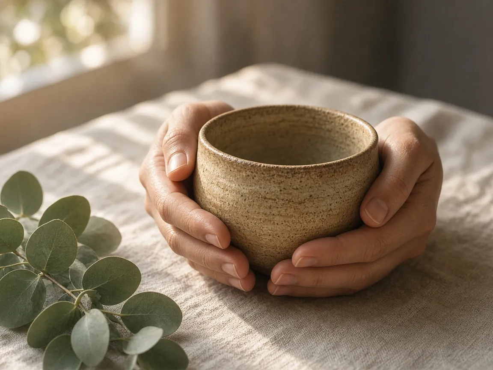

The tea ritual: one cup, fully tasted
Most of the cups of tea we drink are drunk by somebody else: a distracted version of ourselves who carries the mug to the desk, sets it down beside the keyboard, and discovers twenty minutes later that it has gone cold. The tea was there. We just weren't. A tea ritual is a small, warm invitation to change that, once a day, with a single cup.
You don't need special equipment, rare leaves, or a ceremony learned over years. You need a kettle, something to drink from, and about ten minutes in which you agree to do only one thing. The tea becomes an anchor in the same way the breath does in seated meditation: a simple, sensory object that you return to each time your attention drifts.
Why tea works so well as a practice
Making tea has a natural rhythm built in. There's waiting for the water, waiting for the leaves to steep, waiting for the cup to cool enough to sip. In ordinary life we fill those gaps with our phones. In a tea ritual, the gaps are the practice. They're small pockets of time that ask nothing of you except to be there.
Tea also engages every sense. There's the sound of water rising to a boil, the colour blooming as the leaves unfurl, the warmth through the cup, the scent that arrives before the taste, and the taste itself, which changes as the tea cools. Each sense is a doorway back to the present moment.
Drink your tea slowly and reverently, as if it is the axis on which the whole earth revolves.
— Thich Nhat Hanh
The ritual, in five movements
1. Prepare
Choose a cup you like holding. Clear a small space, even just a corner of the kitchen counter, so the ritual has somewhere to live. If you can, leave your phone in another room. Fill the kettle and, as it heats, simply listen. Notice how the sound changes from a low murmur to a rolling hiss.
2. Steep
Pour the water over the leaves or the bag, and watch. Colour drifts out in slow ribbons. Steam curls and disappears. Most teas need two to five minutes; rather than guessing, use the timer below, set to your tea's steeping time, and let the bell tell you when it's ready. While you wait, rest your hands on the counter and take a few unhurried breaths.
3. Hold
Before you drink, wrap both hands around the cup. Feel its weight and warmth. Notice where the heat is strongest: the palms, the fingers, the wrists. Bring the cup close and breathe in the scent. Is it grassy, malty, floral, smoky? There's no need for the right word. Just notice.
4. Taste
Take a small sip and let it rest on your tongue for a moment before swallowing. Notice the temperature, the texture, the first flavour and the aftertaste. Then set the cup down between sips. That small gesture, putting it down, is surprisingly powerful. It stops the automatic hand-to-mouth loop and reminds you that each sip is its own moment.
5. Close
When the cup is empty, pause for one more breath. Notice how your body feels compared with ten minutes ago. Then wash the cup slowly, with the same attention, and let that be the end of the ritual.
When your mind runs off
It will. You'll be halfway through a sip and realise you're composing a message in your head. That's fine; it's what minds do. Gently bring your attention back to something you can sense: the warmth of the cup, the taste on your tongue, the steam on your face. You can even silently name it: "warm," "bitter," "sweet." Each return is a small act of kindness toward yourself.
Making it yours
Some people like to pair the ritual with a fixed time of day: the first cup of the morning, a mid-afternoon reset, or a calming evening brew. Others keep it for difficult days, when a few protected minutes feel most needed. You might add a simple intention before the first sip, such as "may this cup be a rest," or follow it with a few lines in a journal. Try our mindful journaling prompts if you'd like a gentle way to continue.
And if you only manage the ritual once a week, that's not a failure. One fully tasted cup is still a moment of real presence in a busy life, and those moments add up.
Your one-cup ritual
Work through these steps with your next cup. Tick them off as you go; your progress is saved on this device, and the print button gives you a card to keep by the kettle.
- Choose your cup and clear a small space for it. Put your phone somewhere out of sight.
- Listen to the kettle from first murmur to full boil, without doing anything else.
- Watch the steep. Set the timer for your tea and follow the colour as it spreads.
- Hold the cup with both hands and notice its warmth and weight for three breaths.
- Breathe in the scent and name one quality, even if it's simply "warm."
- Take three slow sips, setting the cup down between each one.
- Notice how you feel when the cup is empty, then wash it slowly.
Tomorrow, the kettle will boil again. Each time it does, you'll have a small, steaming invitation to come back.

Written by Elrond
Founder of Willowhush. Practicing, forgetting, and beginning again, one breath at a time. More about Willowhush →